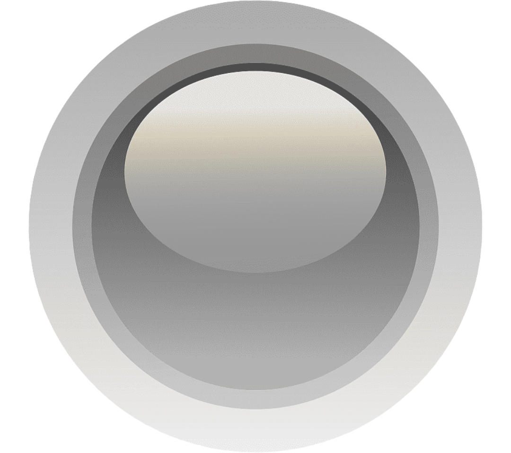

CAM 1

CAM 2
CAM 3
CAM 4

Knobs are correct! Audio capabilities have been restored.
Date and time are correct! Footage has been displayed.
transmission monitor
deep space relay — live feed
coherence
signal gain — A1 + A2
censorship
signal noise — B1 + B2
transmission unlocked
coherence maximised — censorship suppressed